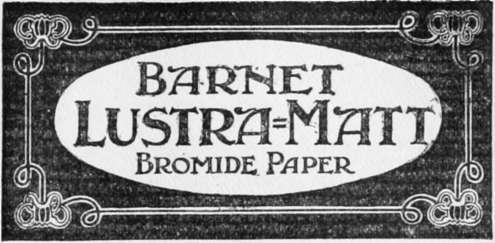

Enlarged Negatives
Description
This section is from the book "The Barnet Book Of Photography", by Herts Barnet. Also available from Amazon: The Barnet Book Of Photography.
Enlarged Negatives
Where a number of large prints have to be produced from one negative, or it is desired to make a large print by another contact process, it is often quicker and more economical to make an enlarged negative for the purpose.
Three different mediums are available—glass, negative paper, or bromide paper. Where economy as well as efficiency is a consideration, the negative paper is preferable.
There are two methods of carrying out the process—one by making a positive, by contact, from the negative; the other by making an enlarged positive, and the negative by contact with that. It is a much-disputed question as to which is the better way, but both have their good points.
In the first method, the small positive must be so made as to contain all the essential qualities for a perfect enlarged negative, since little or no retouching can be done on it, whereas by the second method any imperfections may be remedied with facility on the enlarged positive.
In both methods there are one or two points which must be rigidly observed with regard to the projected image. First, the source of illumination must be perfectly steady, whether a condenser be employed or not, for, if there be any fluctuation, either in the intensity or the projected rays, of the light emanating from the lens, you will infallibly get a softening, or diffusion, in the lines of the image; second, if glass plates are used, they must be backed, otherwise you will get diffusion.
In making the small positive, the essential features required are full detail, thinness, and clearness, without actual clear glass in the high lights. A developer similar to those given for enlargements is one of the best suited for the purpose. Either lantern plates or slow ordinary plates may be used for making the positive, but in either case they must be well under control during development, so that they may be stopped at any desired stage.
Remember, when judging the density, to view the positive or negative by transmitted light.
Obviously, a developer which produces detail first while the density slowly accumulates is the best one to use, although in manipulating it the worker must constantly bear in mind that he is reversing the usual order of things and points which call for observation. The usual depth of tone and sparkle obtained in a lantern-slide must be avoided here, since delicacy and the rendering of all detail contained in the small negative are of the highest importance if we would get a perfect reproduction in the large one. A consideration of the manipulation in contact printing would be of great service in the production of the small positive, since all the chemical and physical conditions apply equally in altering the character of the negative if desirable.
A New Bromide Paper.
Fixing and washing are carried out as usual, and, when dry, the positive is placed in the lantern in the usual way, remembering that the film side must face the light if a plate is used for the large negative. The large plate should be supported in a printing frame, and focussing effected by substituting a piece of white card in its place. Should there be any difficulty in focussing, the following is a good method of obtaining the acme of definition ;—Take an ordinary dry plate, and without exposing to light place it in the fixing bath till all the silver bromide is dissolved, leaving only the clear film; wash and dry, and then with a fine-pointed hard pencil rule a number of parallel lines both ways of the plate at about one-sixteenth of an inch apart. This plate is placed in the lantern and accurately focussed, after which the positive to be enlarged is substituted.
Now, if a considerable amount of work in this direction is contemplated, with the use of plates for the enlarged image, the question of trial exposures is rather a serious matter from the economical point of view, and I would strongly recommend workers to make a few experiments in order to facilitate the process as much as possible, To this end a comparison of the relative speeds of a certain brand of bromide paper and a certain brand of plate should be made ; the paper should be as thin and smooth as possible, but should not have a glazed surface. Here, then, we may use bromide paper for the trial exposure and reduce the exposure for the plate to the corresponding degree. As a matter of fact, from an artistic point of view, for a negative ioin. x8in. and upwards, the use of plates is totally unnecessary; negative paper, and bromide paper oiled or waxed, giving everything that could be desired in the form of a negative for contact printing, there being little or no indication of the grain of the paper. The subsequent operations in the process are identical with those given for direct enlargements.
In the second method, an enlarged positive is made direct from the original negative, and the negative made by contact from that. Although not quite so economical for the inexperienced worker, this method has a great feature in the facility with which any retouching may be executed, especially when paper is used, as the effect and value of each pencil or brush stroke are immediately seen.
If thin bromide paper is used for the enlarged negative, the grain is so fine that there is really no need to try and eliminate it by oiling or waxing ; if, however, it is desired to increase the translucency, the following methods may be employed :—Take some castor oil and apply to the back of the print with a piece of rag. Place the print between clean blotting-paper, and apply a warm iron to the back, changing the blotting-paper so long as it absorbs oil, until the print has become uniformly translucent. The operation is extremely easy, and any kind of bromide paper will answer. If wax is preferred, then paraffin wax may be employed.
A convenient way of using it is to melt the wax and pour it on a piece of ordinary paper, or to dip the paper in the molten wax, and then, placing the bromide print face downwards on a clean piece of blotting-paper, put the waxed paper on the back of it; cover with a piece or two of blotting-paper and apply a hot iron.
Continue to:
- prev: Fixing
- Table of Contents
- next: Contact Printing
Tags
paper, print, negative, exposure, lens, development, camera, focus